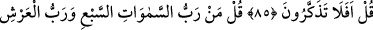
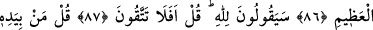

SİZ HİÇ DÜŞÜNÜP
TAŞINMAZ MISINIZ?
84. (Rasûlüm!) de ki: “Eğer biliyorsanız (söyleyin bakalım), bu dünya ve onda
bulunanlar kime aittir?”
85. “Allah’a aittir” diyecekler. “Öyle ise siz hiç düşünüp taşınmaz mısınız!” de.
86. Yedi kat göklerin Rabbi, azametli Arş’ın Rabbi kimdir? diye sor.
87. “(Bunlar da) Allah’ındır.” diyecekler. Şu halde siz Allah’tan korkmaz mısınız!
de.
88. Eğer biliyorsanız (söyleyin), her şeyin melekûtu (mülkiyeti ve yönetimi)
kendisinin elinde olan, kendisi her şeyi koruyup kollayan, fakat kendisi
korunmayan (buna muhtaç olmayan) kimdir? diye sor.
89. “(Bunların hepsi) Allah’ındır” diyecekler. “Öyle ise nasıl olup da büyüye
kapılıyorsunuz?” de.
90. Doğrusu biz onlara hakkı getirdik; onlar ise hakikaten yalancılardır.
Rasûlüm! “de ki: “Eğer” her hangi bir şey “biliyorsanız (söyleyin bakalım), bu
dünya ve onda bulunanlar” orada bulunan mahlûkât “kime aittir?” Çünkü bu, onlara
cevap olmak üzere yeterlidir. Gâyet açıktır ki burada onların cehâletini ortaya koyma
hususunda durumun âşikâr olduğunu mübâlağa ile ortaya koyma vardır.
85. “Allah’a aittir” diyecekler. “Öyle ise siz hiç düşünüp taşınmaz mısınız!” de.
“Allah’a âiddir” diyecekler.” Çünkü akıl bedîhî olarak onları yaratanın Allah Teâlâ
olduğunu îtiraf etmeye zorlar.